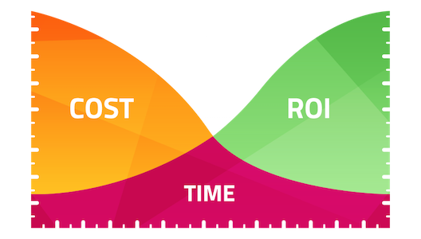

Un peu d'histoire : 70s-80s
Quelle entreprise pourrait nier les avantages de l'informatisation des tâches ?
Contexte émotionnel : Ruptures technologiques, fantasme de la modernité
Un peu d'histoire : 70s-80s
Informatisation du SI :
- Par partie
- Point à point
- Anarchique
Un peu d'histoire : 90s
La révolution de la "rationalisation" n'a pas eu lieu :
Le SI est maintenant un centre de coût : ROI.

Un peu d'histoire : 90s
Informatisation du SI :
- Centralisation de fonctions communes
- Apparition des EAIs
- Gestion du legacy
Un peu d'histoire : 2000s
La "bulle internet"
Retournez à la case de départ, ne gagnez pas 20 000€
Un peu d'histoire : 2000s
Informatisation du SI :
- Impact de TCP/IP
- Intranets/Extranets
- Gisements de nouveaux centres de profits
Aujourd'hui
Urbanisation pour la réduction des coûts
Le soufflé est retombé
Et demain ?
L'urbanisation du SI pour produire de la valeur
Augmenter le CA au lieu d'abaisser les dépenses
Quelques chiffres ?
- Budget annuel du DSI de l'état : 80 M€
- Budget annuel Bouygues Immobiilier : 10 M€
- Idem pour le FAI Bouygues : 15 M€
- Budget DSI Groupe Orange : 5% du CA annuel
- Uber : 1000 M€ de CA